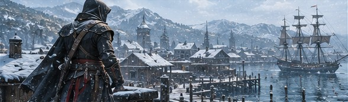

Protagonista
Shay Patrick Cormac
Un Asesino irlandés cuya ruptura con la Orden lo lleva a convertirse en cazador de sus antiguos aliados.
Por primera vez, la saga permite vivir el conflicto desde el lado de un antiguo Asesino que se convierte en Templario. Shay Patrick Cormac emprende una ruptura que cambiará su relación con la Hermandad y con sus antiguos compañeros.
Por primera vez, la saga permite vivir el conflicto desde el lado de un antiguo Asesino que se convierte en Templario. Shay Patrick Cormac emprende una ruptura que cambiará su relación con la Hermandad y con sus antiguos compañeros.
Este dossier reúne los personajes, el contexto histórico, los lugares y las actividades que definen esta entrega. La información está organizada para descubrir el juego sin perderse entre sus distintas capas.
Las figuras que dan forma a la historia de Assassin’s Creed Rogue.

Un Asesino irlandés cuya ruptura con la Orden lo lleva a convertirse en cazador de sus antiguos aliados.
Mentor de la Hermandad colonial y figura decisiva en la vida de Shay.
Miembro de la Hermandad que participa en las operaciones coloniales.
Líder templario que guía a Shay en su nueva etapa.
Atlántico Norte · 1752–1760 · Una recreación histórica que combina acontecimientos reales y ficción.
Tras una misión que termina en tragedia, Shay pierde la fe en los métodos de la Hermandad. Su recorrido lo lleva a perseguir a antiguos compañeros y a comprender el conflicto desde la perspectiva templaria.
Regiones, ciudades y escenarios que dan personalidad a esta aventura.
Aguas frías, icebergs y rutas peligrosas.
Ciudad colonial donde se desarrollan misiones y operaciones.
Territorio boscoso con asentamientos, fuertes y secretos.
Escenario de un acontecimiento fundamental en la historia.
Los sistemas principales que definen la forma de jugar esta entrega.
Barco de Shay, preparado para navegar por aguas heladas.
Evitar icebergs y utilizar armas especiales del barco.
Herramienta para neutralizar enemigos sin alertar a todos.
Detectar emboscadas y perseguir miembros de la Hermandad.
Los enemigos pueden esconderse y sorprender al jugador.
Equipo y habilidades adaptadas a la nueva afiliación.
Qué hacemos durante la aventura, cómo exploramos el mundo y qué sistemas conviene dominar.
Explorar el Atlántico Norte y el valle, liberar fuertes, localizar asentamientos, seguir pistas de antiguos Asesinos y vigilar el entorno para detectar emboscadas. La percepción del peligro cambia: ahora otros Asesinos pueden estar acechando a Shay.
Detalles y sistemas especiales que merece la pena descubrir durante la exploración.
La historia conecta con acontecimientos de Assassin’s Creed III y Unity.
La mecánica de perseguir Asesinos invierte la dinámica habitual de la saga.
El Morrigan tiene herramientas específicas para navegar por aguas heladas.
ARCHIVO EN AMPLIACIÓN · Se añadirán ubicaciones concretas y capturas propias a medida que se complete la documentación de cada juego.
Ofreció una perspectiva templaria jugable y conectó varias entregas de la etapa colonial.